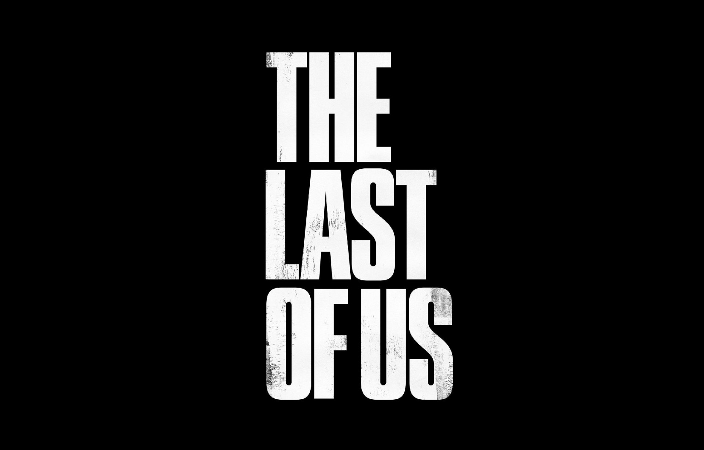

HISTORIA
The Last of Us Part I es un juego de acción y aventuras de 2022 desarrollado por Naughty Dog y publicado por Sony Interactive Entertainment. Es una nueva versión del juego The Last of Us de 2013 y presenta una jugabilidad revisada, que incluye combate y exploración mejorados y opciones de accesibilidad ampliadas.